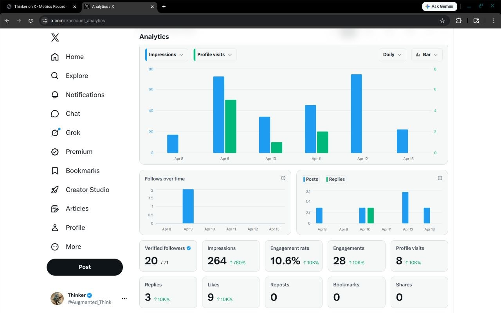

Archive
Expand archive
Original X Profile State
A tucked-away reference to the dormant Augmented Thinker profile before the current active posting loop began.
X / Social Presence
A snapshot of the analytics from the Thinker X profile following the reactivation of the account and the beginning of the daily-posting human-AI collaboration experiment.
A tucked-away reference to the dormant Augmented Thinker profile before the current active posting loop began.
This archive preserves the earlier record of the Thinker X profile before the current active workflow and posting cadence took shape.
The profile is growing in real reach, with impressions rising from 104 to 264 and engagements from 16 to 28. Replies and profile visits are also up, which suggests the posting loop is producing broader visibility and some genuine interest, not just passive views. The main weakness is that deeper propagation is still absent: reposts, bookmarks, and shares remain at zero.
Up from 104, roughly a 2.5x increase.
Up from 16, with replies increasing from 1 to 3.
Lower than the earlier 15.3%, meaning reach is rising faster than interaction density.
People are seeing and lightly engaging, but not yet strongly compelled to save or pass posts along.

Current comparison point after several additional daily posts and proof-of-post archiving.
The older screenshots stay available here as comparison points, but remain minimized by default so the current picture stays primary.